關丹聯絡處
一令吉，能租到什麼？

先別急著下結論，讀完再說說你的想法～
這一篇講關丹聯絡處：2000年，一場靜思語教學營，慈濟第一次走進彭亨州的海邊城市。
你會讀到只收一令吉的會所、報紙上露宿街頭的母子，還有一群穿上志工背心、一起付出的受災鄉親和難民。
下面是原書的節錄，紅色底線是我們替你標出的轉折點。
讀之前：一個人受了幫助以後，你覺得他會怎麼做？
慈濟走進關丹
2000年，一場靜思語教學營。閱讀引導
……在彭亨佛教會會長兼關丹師訓學院講師黃先炳的邀請下，慈濟馬六甲教聯會於關丹舉辦靜思語教學培訓營。這是慈濟首度走入關丹，當日活動有逾一百五十位師生參加。

就這樣開始了！
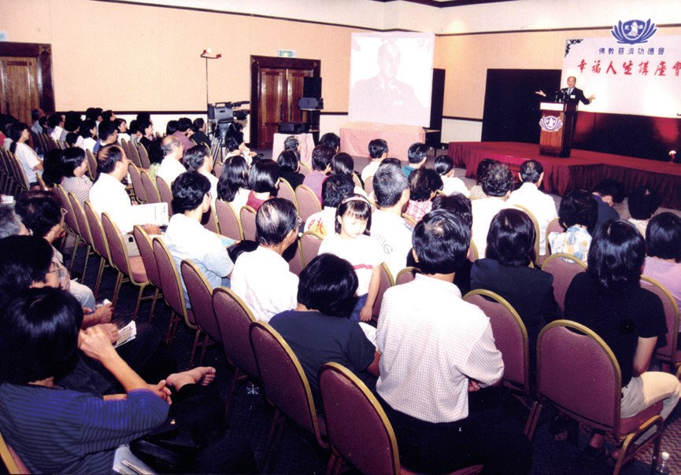
……也走訪貧困鄉村，尋找極需關懷的機構及家庭，短短數月就在當地接引了五十多位志工及三百多位會員。
猜一猜閱讀引導
2006年，龔秀娟把家族的三層店屋借給慈濟當會所。她收了多少錢？

只收一令吉！
- 154位志工p.743
- 6,119人會員p.743
先找一個家
報紙上的一則新聞。閱讀引導
關丹慈濟的第一個關懷個案梁永耀，因為罹患帕金森氏症無法工作，家中經濟重擔落在妻子身上。
2003年3月，關丹報紙刊登一對母子露宿街頭，母親黃嬌因年邁及高血壓的因素無法工作，29歲的兒子則患有精神疾病，需要長期吃藥控制病情。
兒子也生病……
志工在得知黃嬌母子的困境後，立即前往訪視，瞭解情況後，先為他們在關丹新村承租房屋。志工們提前去粉刷牆壁跟清潔環境，提供二手家具，讓黃嬌相當感激志工們的用心。
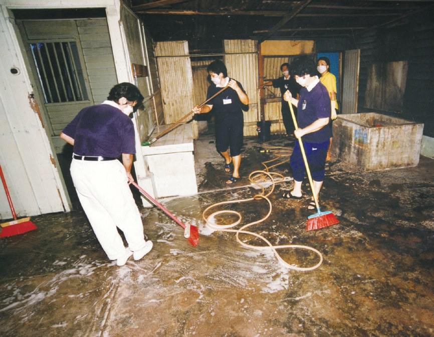

還先刷好牆壁！
鼓勵大家每日將零錢投入竹筒，存一念善心，就能幫助需要的人。
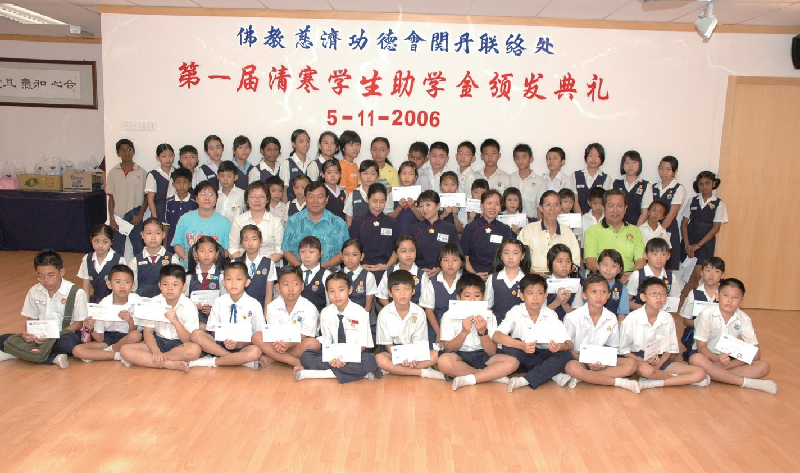
彭大的第一顆種子
從兒童班、青少年班，到大學。閱讀引導
青少年時期的孩子容易與家長起衝突，志工們成為溝通的橋梁，協調父母與孩子的互動關係，陪伴親子度過這段敏感期。

有人幫忙溝通！
慈青何嘉升於2009年到彭亨大學就讀，因此成為彭大校園的第一顆菩提種子，參與慈濟活動之餘，也邀約同學一起來認識慈濟。一場「行善行孝不能等」的茶會中，感動了另外八位同學，紛紛發願要跟著志工去做好事。
- 1個環保教育站p.749
- 1個環保站p.749
- 10個日間和夜間環保點p.749
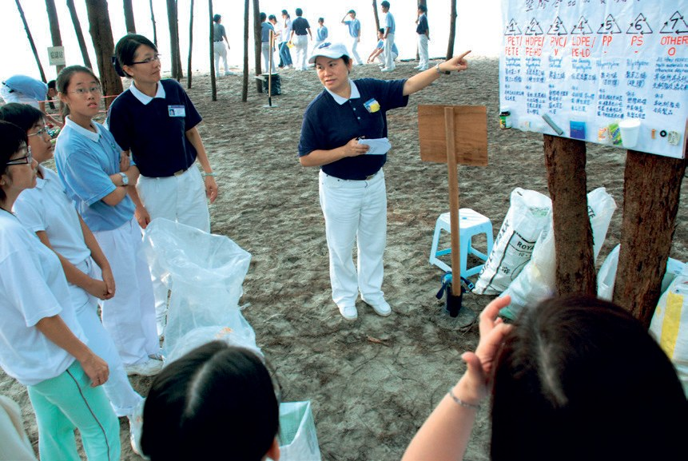
穿上志工背心
受助的人，也一起來付出。閱讀引導
2013年12月初，馬來西亞半島東海岸因連日大雨，多州遭受嚴重水患，關丹多處道路遭淹沒，水深達三至四尺，逾兩萬多位居民受災。
在收容中心，看著慈濟志工人力不足，忙碌的協調事務，許多災民也紛紛穿上慈濟志工的背心，協助幫忙運輸物資、整理場地；也有關丹慈濟親子班的父母，帶著孩子一起來付出。
也來當志工！
關丹志工提前勘查地點，清掃環境，修繕破損的門窗、水管等，讓原先要收取租金的村長很感動，改為免費提供場地讓慈濟辦義診。
由於有些難民不諳馬來語，現場即邀請通曉馬來語的難民穿上志工背心，為同鄉做翻譯，成為醫護人員與難民之間溝通的橋梁。

當起翻譯！
- 七天趕工時間p.753
- 123人次動員志工p.753
- 3,514個防護面罩p.753
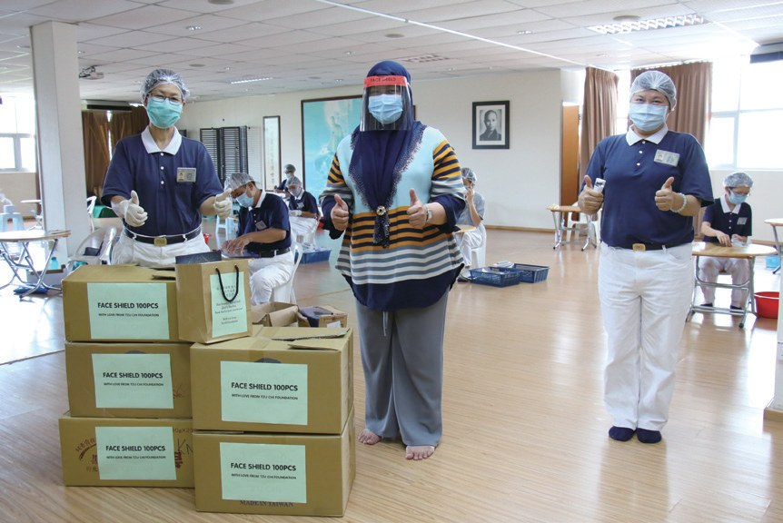
不懈怠
第一位負責人、司機志工、勇敢的病人、看報紙的老師。閱讀引導
龔秀娟（慈慇）早期因陪伴孩子就學，而在新加坡定居將近十一年。1993年，身為虔誠佛教徒的她，在一位佛友多次邀請下，參與新加坡慈青活動。這是她第一次認識並接觸慈濟，也因為這次的活動，被證嚴上人慈悲為懷的精神深深感動，卻無奈因緣不足而未加入志工行列。
心裡已經很感動了！
1995年，林漢城（濟煇）因閱讀證嚴上人的《千手佛心》而被慈濟的精神所打動，認為上人與慈濟人是他要學習的典範，當時關丹還未有慈濟聯絡點，無緣加入這個慈善團體。
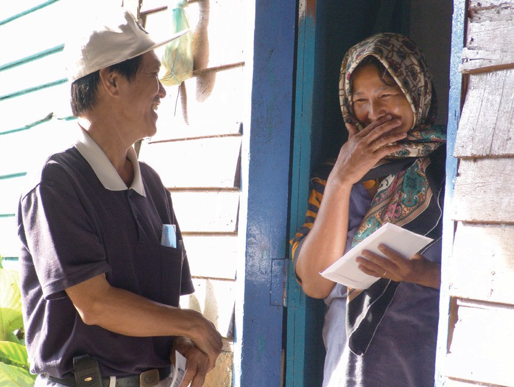
……慈濟法親因此挺身而出，接力載送張彩霞接受化療。
在家人及志工貼心的幫助下，張彩霞除了感謝逆境的磨練，也讓她反思過去的生活，瞭解所謂的「精進」，並不是埋頭苦幹，而是「不懈怠」的精神。
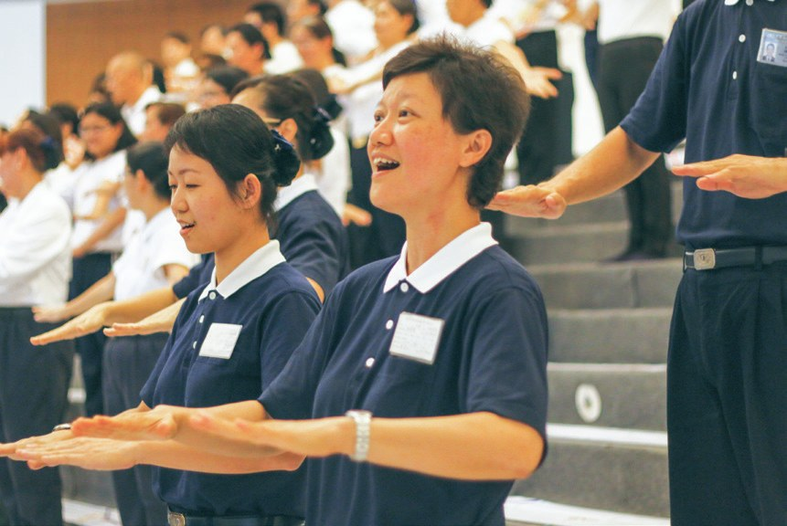
還用故事鼓勵大家。
2001年12月28日，慈濟人因前往林明舉辦水災發放，而被當地報社報導；關丹居民黃瀞慧看到報導，對慈濟人的慈善理念很認同，期盼也能進一步認識慈濟。
2010年黃瀞慧承擔起關丹聯絡處副負責人，帶動當地志工拓展慈善腳步。2014年，因三位女兒有了穩定的工作，在家人的支持下，她毅然選擇退休，專心投入志工行列。
停一停：誰讓你記住了？閱讀引導
選一位你印象最深的人。沒有標準答案。
有人只收一令吉借出店屋，有人生病還在鼓勵大家，有老師看了報紙就加入，有大學生帶動八位同學。哪一位讓你最有感覺？

一起回頭看看吧～
回望
依本章原文整理，每一條都標了原書頁碼。閱讀引導
背後原因
關丹怎樣有了聯絡點

小川一開始只是一場教學營，後來怎麼會成立聯絡點？
- 教學營
2000年慈濟首度走入關丹。p.741
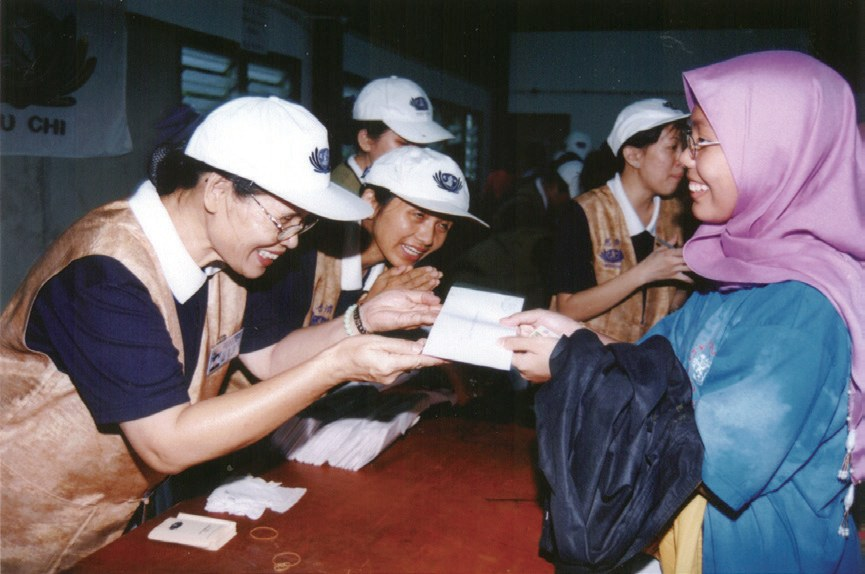
水災發放急難發放得到當地居民認同。p.741–742
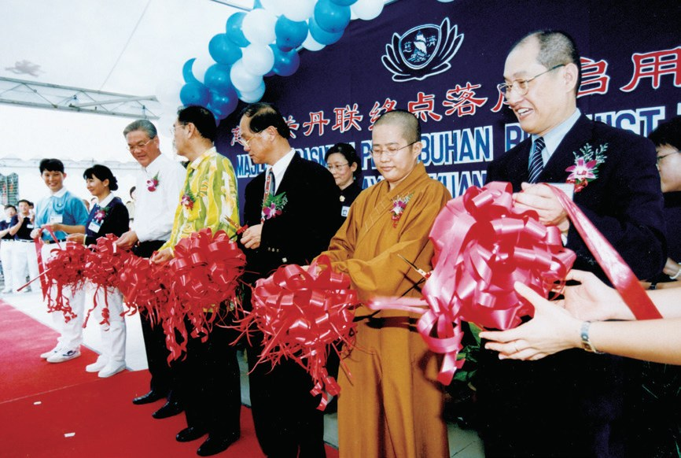
成立聯絡點2002年宣布設立關丹聯絡點。p.742
後續發展
關丹一路走來

小禾從第一場教學營到第一次難民義診，經過了多少年？
- 2000.10.21
慈濟首度走入關丹。p.741
- 2002.1.13
宣布設立關丹聯絡點。p.742
- 2002.11.17
關丹聯絡點啟用。p.742
- 2006.11.5
首次舉辦新芽助學金發放。p.745
- 2010.11.20
彭亨大學第一批慈青幹部。p.747
- 2018.7
首次舉辦難民義診。p.751
一起來付出
受助的人也幫忙
小禾在關丹，哪些受助的人也一起來付出？
- 第一圈受災鄉親
受災鄉親穿上志工背心搬物資。p.751
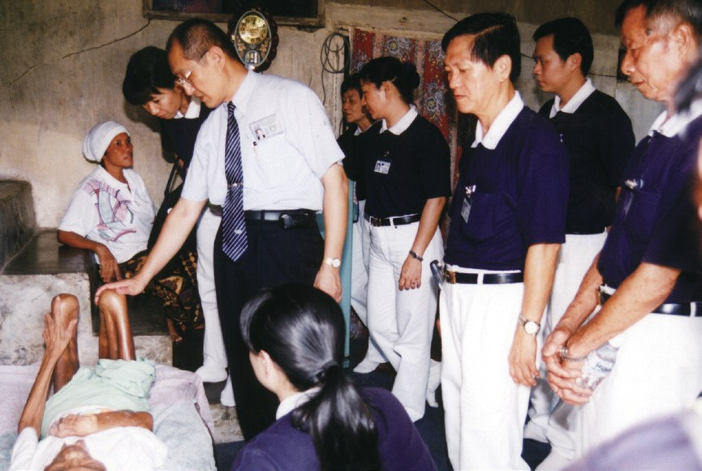
第二圈村長村長免費提供場地辦義診。p.751
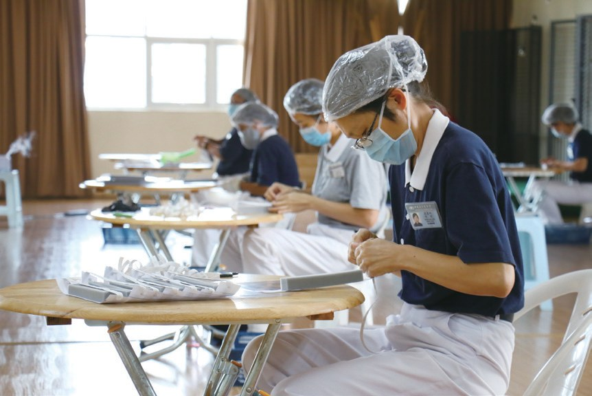
第三圈難民難民為同鄉做翻譯。p.752
以上只整理本章寫到的事；書裡沒寫到的，我們不替它下結論。
回頭看讀前的選擇閱讀引導
收容中心裡，許多受災鄉親也穿上志工背心幫忙（p.751）；難民穿上志工背心，為同鄉做翻譯（p.752）。受助的人，當下就能一起付出。
他們心裡是什麼感受？
只有你自己看得到喔！
準備好了就一起出發～